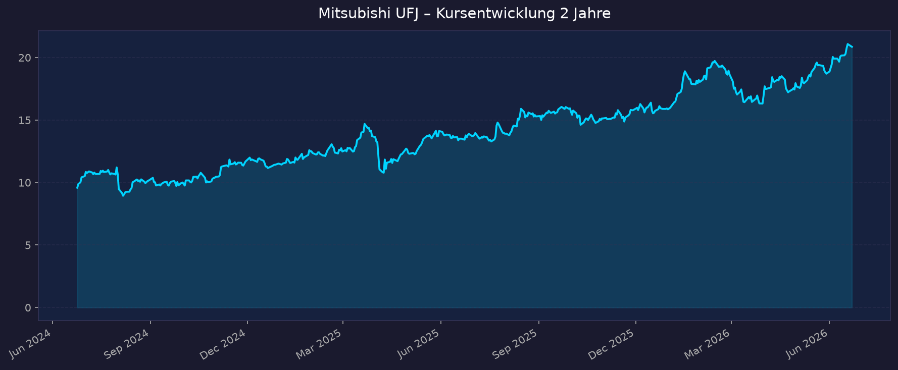
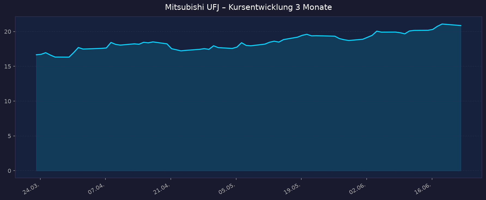

Interaktiver Chart: TradingView NYSE:MUFG
📈 1. Kursentwicklung
Aktueller Kurs (ADR): 20,86 USD | Veränderung heute: ca. -1,0 % (Vortagesschluss 21,08 USD) Heimatbörse: 8306.T (Tokio, JPY) – Kurs in Yen; ADR = ca. 1 Stammaktie-Äquivalent (1 ADR : 1 Aktie). USD-ADR-Rendite stark vom Wechselkurs USD/JPY (~161) beeinflusst.
Chart – 2 Jahre

Chart – 3 Monate

| Zeitraum | Kurs Start | Kurs Ende | Veränderung |
|---|---|---|---|
| 2 Jahre | 9,59 USD | 20,86 USD | +117,5 % |
| 3 Monate | 16,66 USD | 20,86 USD | +25,2 % |
| 52-Wochen-Hoch | — | 21,18 USD | — |
| 52-Wochen-Tief | — | 13,19 USD | — |
Einordnung: Notiert nahe dem 52-Wochen-Hoch (98 % des Hochs). Außergewöhnliche 2-Jahres-Performance (+117 %) getragen von der BoJ-Zinswende und Rekordgewinnen. Kurzfristig sehr starkes Momentum (+25 % in 3 Monaten).
💹 2. KGV-Entwicklung (Kurs-Gewinn-Verhältnis)
Aktuelles KGV: ~15,0 (trailing, EPS 1,32 USD)
| Zeitraum | KGV | Einordnung |
|---|---|---|
| Aktuell | ~15,0 | über eigenem 3-/5-Jahres-Schnitt |
| vor ~6 Monaten (Dez 2025) | 14,31 | leicht niedriger |
| Ende 2024 (~18 Mon.) | 10,5 | deutliche Bewertungsausweitung seither |
| 3-Jahres-Schnitt | 12,57 | — |
| 5-Jahres-Schnitt | 11,15 | — |
Bewertung: Das KGV ist von 10,5 (Ende 2024) auf ~15 gestiegen – die Aktie ist im historischen Eigenvergleich nicht mehr günstig. Für eine Bank, deren Gewinne durch die Zinswende strukturell steigen, ist ein KGV um 15 dennoch moderat; entscheidend für Banken ist eher das KBV (Abschnitt 3). Werte exakt vor 3/12/24 Monaten granular nicht verfügbar (Macrotrends-Detailseite kostenpflichtig).
💰 3. KBV (Kurs-Buchwert-Verhältnis) & P/S
Für Banken ist das KBV (P/B) die zentrale Bewertungskennzahl, nicht das P/S.
Aktuelles KBV (P/B): ~1,71 (yfinance) bzw. ~1,44 (GuruFocus, 16.06.2026) | Buchwert/Aktie ~12,44 USD
| Zeitraum | KBV (P/B) | Einordnung |
|---|---|---|
| Aktuell | ~1,44–1,71 | nahe historischem Hoch |
| Historisches Hoch (13 J.) | 1,69 | aktuell erreicht/überschritten |
| Historisches Tief (13 J.) | 0,30 | jahrelang weit unter Buchwert |
P/S (Kurs-Umsatz): ~0,028 (yfinance) – für Banken wenig aussagekräftig, daher nicht als Bewertungsmaß herangezogen.
Trend: Das KBV ist von langjährig <1,0 (typischer Diskont japanischer Banken) auf ~1,4–1,7 gestiegen – MUFG handelt erstmals seit Jahren klar über Buchwert und nahe dem oberen Ende seiner historischen Spanne. Das spiegelt die Neubewertung durch die Zinswende, lässt aber den früheren „billigen" Substanzpuffer schrumpfen. GuruFocus stuft die Aktie als „significantly overvalued" ein (GF-Value ~13,47 USD).
📊 4. Handelsvolumen (Trading Volume)
| Zeitraum | Ø Tagesvolumen (ADR) | Auffälligkeiten |
|---|---|---|
| 10-Tage-Durchschnitt | ~3,51 Mio. Aktien | leicht über 3-Monats-Schnitt |
| 3-Monats-Durchschnitt | ~3,22 Mio. Aktien | — |
| 2-Jahres-Durchschnitt | nicht granular verfügbar | — |
| Volumen-Peak (2J) | nicht verfügbar | typisch um Earnings-Termine (Aug/Nov/Feb/Mai) |
Volumentrend: ADR-Volumen leicht erhöht (10T > 3M), passend zum Kursanstieg Richtung 52-Wochen-Hoch. Hinweis: Das Haupthandelsvolumen liegt in Tokio (8306.T); die ADR-Zahlen bilden nur einen Teil des Gesamtinteresses ab.
🏦 5. Insider Trades (letzte 2 Jahre)
Daten für die ADR nicht verfügbar.
Japanische Emittenten unterliegen nicht der US-amerikanischen SEC-Form-4-Meldepflicht; für MUFG liegen daher keine standardisierten Insider-Transaktionsdaten (OpenInsider/SEC Edgar) vor. Keine belastbare Quelle gefunden.
Quelle: SEC Edgar / OpenInsider – keine Form-4-Daten für japanischen Emittenten.
🩳 6. Short-Positionen
Aktuelle Short Quote: ~0,07 % des Float (Stand 08.06.2026) – praktisch vernachlässigbar.
| Zeitraum | Short Interest | Veränderung |
|---|---|---|
| Aktuell (08.06.2026) | ~0,07 % Float (~6,96 Mio. Aktien) | — |
| vor 3/6/12 Monaten | nicht granular verfügbar | — |
| Short Ratio (yfinance) | 2,75 Tage | — |
Einschätzung: Sehr niedrig. Kein nennenswertes Leerverkaufsinteresse in der ADR – kein Short-Squeeze-Potenzial, aber auch kein bärisches Positionierungssignal. Konsistent mit dem positiven Sentiment.
🗞️ 7. Aktuelle Nachrichten
| Datum | Quelle | Nachricht | Relevanz |
|---|---|---|---|
| 16.06.2026 | CNBC/Al Jazeera | BoJ hebt Leitzins auf 1,0 % an – höchster Stand seit September 1995 (Votum 7:1) | Hoch |
| 17.06.2026 | TradingKey | MUFG-Kurs +3,13 % an einem Tag (Zinswende-Schub) | Hoch |
| Juni 2026 | Simply Wall St / TradingKey | Analysten überwiegend „Strong Buy", Ø-Kursziel ~22,25 USD | Hoch |
| Mai–Juni 2026 | Globe and Mail | Aktienrückkauf läuft: 20.–31.05. ~10,7 Mio. Aktien für ~¥32,8 Mrd. (Programm bis ¥100 Mrd.) | Hoch |
| Mai 2026 | Investing.com | Rekord-Gesamtjahr: Nettogewinn +30 % auf ¥2.427 Mrd., 3. Rekord in Folge, EPS +33 %, ROE 11,3 % | Hoch |
| Mai 2026 | Investing.com | Höhere Ziele FY2026: Nettogewinn-Ziel ¥2,7 Bio. (+11 %), ROE-Ziel 12,0 % | Hoch |
| 13.04.2026 | StockTitan (13D/A) | Morgan-Stanley-Anteil 23,95 %; 8. Zusatzvereinbarung (Standstill bis Okt. 2028 verlängert) | Mittel |
| 04.02.2026 | Businesswire | Q3/9M FY2025: Nettogewinn ¥1.813,5 Mrd. (86 % des Jahresziels), +3,7 % J/J | Mittel |
| 27.11.2025 | ts2.tech | Kurs nahe Rekordhoch auf Rating-Stärke, Rückkäufe, neuer Asien-Deal | Mittel |
| 14.11.2025 | MUFG/Investing.com | H1-Guidance angehoben (¥2,1 Bio.), Dividende auf ¥74/Aktie, Rückkauf bis ¥500 Mrd. | Hoch |
Sentiment: Überwiegend positiv. Zinswende, Rekordgewinne, höhere Ziele, aggressive Kapitalrückführung und bullische Analysten. Risiko: Aktie nahe Allzeithoch „eingepreist".
📋 8. Letzte 3 Quartalsberichte
(JGAAP; Geschäftsjahr endet 31. März. „FY2025" = April 2025–März 2026. Werte teils kumuliert berichtet.)
9M FY2025 (Apr–Dez 2025) – berichtet 04.02.2026
| Kennzahl | Ist | Erwartung | Abweichung |
|---|---|---|---|
| Ordinary Income (Erträge) | ¥10,64 Bio. (+3,6 %) | — | — |
| Ordinary Profit | ¥2,51 Bio. (+3,6 %) | — | — |
| Nettogewinn (kum.) | ¥1.813,5 Mrd. (+3,7 % J/J) | — | 86,4 % des Jahresziels |
| Q3 allein (Okt–Dez) Nettogewinn | ¥520,6 Mrd. (Vj. ¥490,7 Mrd.) | — | — |
Guidance: Jahresziel ¥2,1 Bio. unverändert bestätigt. Kursreaktion: ADR ~18,05 USD, -0,8 % am 04.02.2026.
H1 FY2025 (Apr–Sep 2025) – berichtet 14.11.2025
| Kennzahl | Ist | Erwartung | Abweichung |
|---|---|---|---|
| Nettogewinn (kum.) | ¥1.292,9 Mrd. | — | über Plan |
| Dividende | ¥74/Aktie (+¥10 J/J) | — | erhöht |
| Aktienrückkauf | bis ¥500 Mrd. (Rekord) | — | — |
Guidance: Jahresziel von ¥2,0 auf ¥2,1 Bio. angehoben. Treiber u. a. Morgan-Stanley-Beteiligung (~24 %). Kursreaktion: Kurs in den Folgewochen nahe Rekordhoch (positiv aufgenommen).
Q1 FY2025 (Apr–Jun 2025) – berichtet 04.08.2025
| Kennzahl | Ist | Erwartung | Abweichung |
|---|---|---|---|
| Nettogewinn | ¥546,1 Mrd. (~-1,8 % J/J)* | über Konsens | Beat |
*Quellen widersprüchlich: Bloomberg/Reuters ¥546,1 Mrd.; eine andere Quelle ¥678,1 Mrd. (+21,8 %). ¥546 Mrd. erscheint belastbarer. Guidance: Jahresziel ¥2,0 Bio. bestätigt. Kursreaktion: Zahlen schlugen Schätzungen (Bloomberg, 04.08.2025); konkrete Tages-% nicht verfügbar.
Gesamtjahr FY2024 (endend März 2025) zum Kontext: Rekord-Nettogewinn ¥2.427,2 Mrd. (+30 %, 116 % der Guidance), EPS ¥213 (+33 %), ROE 11,3 %. Dividendenplan FY2026 ¥96/Aktie.
🌍 9. Marktkontext & Wettbewerb
(via market-research Skill)
Markt / Branche: Japanischer Bankensektor, dominiert von drei Megabanken: MUFG (Nr. 1), SMFG, Mizuho. MUFG-Bilanzsumme ca. 2.679 Mrd. USD (~398 Bio. Yen, per 31.03.2025), größte japanische Bank, global in der erweiterten Spitzengruppe (hinter chinesischen Staatsbanken, JPMorgan, HSBC). Marktkapitalisierung ~228–235 Mrd. USD.
| Wettbewerber | Stärke | Schwäche |
|---|---|---|
| MUFG (8306.T) | Größte Bilanz, breiteste internationale Aufstellung, 23,95 % an Morgan Stanley (US-IB/Wealth-Hebel, Alleinstellung); höchste absolute Ertragskraft | ROE leicht unter Mizuho; großes US-Exposure (historisch Verlustquelle) |
| SMFG (8316.T) | Höchstes Gewinnwachstum, aggressivste Kapitalrückführung, sehr effizient | Kleinere Bilanz, geringere globale IB-Präsenz |
| Mizuho (8411.T) | ROE 11,4 % (leicht über MUFG), Ziele vorzeitig erreicht | Historisch schwächste der drei (IT-Ausfälle), kleinste Skala |
Branchentrends:
- BoJ-Zinswende: Leitzins 1,0 % (Juni 2026, höchster seit 1995), Ende der Negativzinsen → strukturelle Ausweitung der Net Interest Margin – wichtigster Gewinntreiber.
- Kapitalrückführung: Alle drei Megabanken fahren Rückkäufe und Dividenden hoch; Dividenden 2022–2026 +60 %+.
- Inflationsende / M&A-Belebung: Mehr Unternehmensinvestitionen und Kreditnachfrage.
Marktposition: Klar führend im Inland. ROE 11,3 % (FY2024), Ziel ~12 % (FY2026); Analysten sehen bei weiter steigenden Zinsen Potenzial Richtung 14–15 %. Japanische Banken handelten lange mit P/B < 1,0 – MUFG hat diesen Diskont weitgehend abgebaut.
Risiken aus dem Marktumfeld:
- Yen/Wechselkurs (ADR-Effekt): Schwacher Yen (~161 JPY/USD) drückt USD-ADR-Renditen; eine Yen-Aufwertung wäre für ADR-Anleger positiv, könnte aber die lokale Aktie belasten – zweischneidig.
- Zins-/Bondrisiko: Steigende Zinsen erzeugen Bewertungsverluste auf Anleihebestände (Q4 FY2025: ~¥100 Mrd. Bond-Verluste + ~¥200 Mrd. Hedge-Anpassung).
- US-Engagement: Historisch Verlustquelle (ehem. Union Bank); Abhängigkeit von Morgan-Stanley-Kapitalmarkterträgen.
- Konjunktur: Abschwung träfe Kreditnachfrage und -qualität.
📝 Gesamteinschätzung
Stärken:
- Rekordgewinne (FY2024 +30 %, EPS +33 %), strukturell steigend durch die BoJ-Zinswende (Leitzins 1 %, höchster seit 1995).
- Größte japanische Bank mit einzigartigem Morgan-Stanley-Anteil (23,95 %) als US-IB-/Wealth-Hebel.
- Aggressive Kapitalrückführung (Rückkäufe bis ¥500 Mrd., steigende Dividende ¥74 → ¥96).
- ROE 11,3 % mit Ziel 12 % (Aufwärtspotenzial 14–15 % laut Analysten); sehr niedriges Short-Interest, bullisches Sentiment.
Risiken:
- Aktie nahe 52-Wochen-/Rekordhoch; KBV von <1,0 auf ~1,4–1,7 gestiegen – Bewertungsdiskont weitgehend abgebaut, „billiger" Substanzpuffer weg.
- Yen-Schwäche drückt USD-ADR-Renditen erheblich (Wechselkursrisiko für deutschen/USD-Anleger).
- Zins-/Bondbewertungsverluste; latentes US-Exposure.
- Gewinndynamik hängt am Fortbestehen des Zinszyklus und der globalen Konjunktur.
Fazit: MUFG ist der klare Profiteur der historischen japanischen Zinswende, mit Rekordgewinnen, soliden ROE-Zielen und kräftiger Kapitalrückführung. Die starke Neubewertung (+117 % in 2 Jahren, KBV nahe Rekord) hat den früheren Substanz-Diskont allerdings weitgehend aufgezehrt, und die Yen-Schwäche schmälert die USD-ADR-Rendite. Eine fundamental intakte, aber nach dem Lauf nicht mehr billige Zins-Wende-Story – Einstieg eher bei Rücksetzern interessant.
🎯 Ranking-Einordnung
Kriterien-Scoring (1–10)
| Kriterium | Gewicht | Punkte (1–10) | Begründung |
|---|---|---|---|
| Fundamentaldaten / Ertragskraft | 25 % | 8 | Rekordgewinne, ROE 11,3 %→12 %, EPS +33 %; klare Zinswende-Hebel |
| Bewertung | 25 % | 5 | KGV ~15 über Eigenschnitt, KBV nahe Rekord – nicht mehr günstig |
| Momentum / Technik | 20 % | 9 | +117 % (2J), +25 % (3M), nahe 52W-Hoch, starker Trend |
| Markt & Wettbewerb | 15 % | 8 | Klarer Marktführer, Zinswende-Rückenwind, Morgan-Stanley-Hebel |
| Risiko / Stabilität | 15 % | 6 | Niedriges Short-Interest, aber Yen- und Zins-/Bondrisiken, US-Exposure |
Gewichteter Gesamt-Score: (8×0,25)+(5×0,25)+(9×0,20)+(8×0,15)+(6×0,15) = 2,00+1,25+1,80+1,20+0,90 = 7,15 / 10
Szenarien 2031 (5-Jahres-Horizont, ADR in USD; Basis 20,86 USD)
| Szenario | Annahmen | Kursziel 2031 | Potenzial |
|---|---|---|---|
| Bär | Zinswende stockt/Rezession, Yen-Schwäche bleibt, Bond-Verluste, Margendruck | ~17 USD | -18 % |
| Base | Stetiger Zinszyklus, ROE ~12 %, moderates Gewinnwachstum, Rückkäufe + ~2,5 % Dividende | ~30 USD | +44 % |
| Bull | ROE Richtung 14–15 %, Yen-Aufwertung (ADR-Schub), anhaltende Neubewertung | ~42 USD | +101 % |
Kursziele sind szenariobasierte Schätzungen, keine Prognose. Dividenden nicht eingerechnet (zzgl. ~2,5 %/Jahr im Base/Bull-Fall).
00_Momentum-Aktien USA-EU-Asien – 5-Jahres-Shortlist 2026-06-23
Datenquellen: Yahoo Finance / yfinance · Macrotrends · GuruFocus · MarketBeat · Investing.com · Bloomberg · Businesswire · Reuters · CNBC · MUFG Investor Relations · StockTitan (SEC 13D/A) · S&P Global · TradingKey Datenstand 2026-06-23. Einzelne Werte als „nicht verfügbar" markiert. Quellen teils widersprüchlich (Q1-Nettogewinn, KBV-Spanne) – im Text gekennzeichnet.
Diese Analyse ist eine rein informative Auswertung öffentlich verfügbarer Daten und keine Anlageberatung. Keine Kauf-/Verkaufsempfehlung. Aktieninvestments bergen Verlustrisiken bis zum Totalverlust. Wechselkursrisiko (USD/JPY) bei ADR beachten. Eigene Recherche und ggf. professionelle Beratung erforderlich.